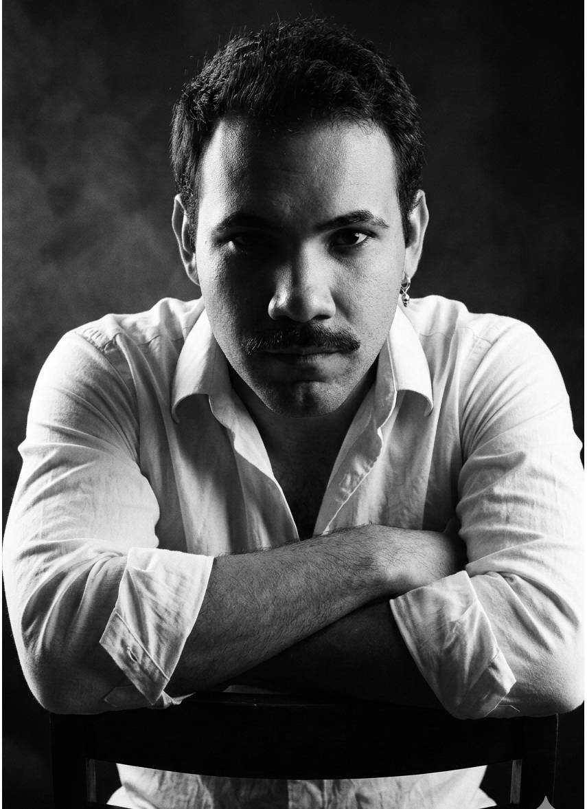
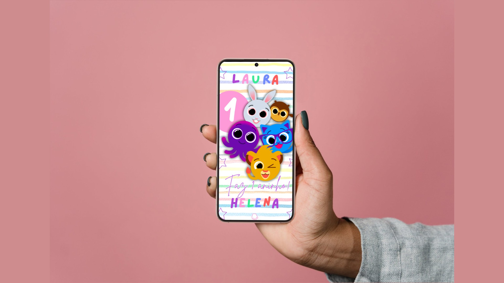
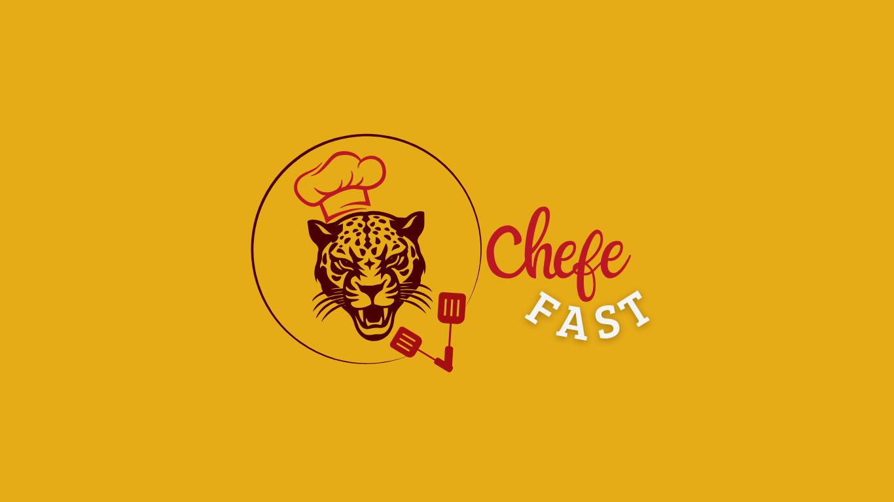
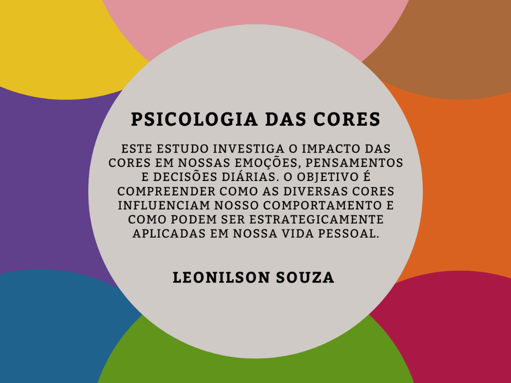
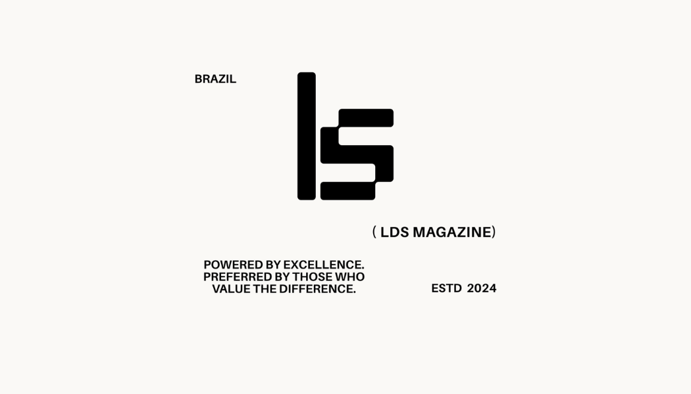
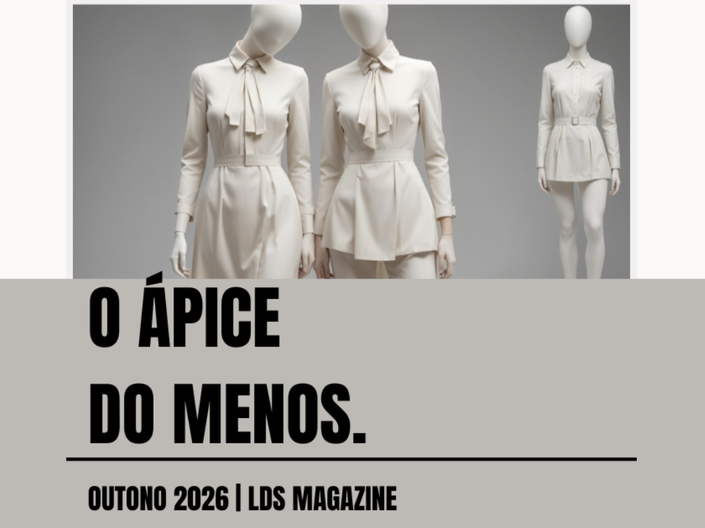
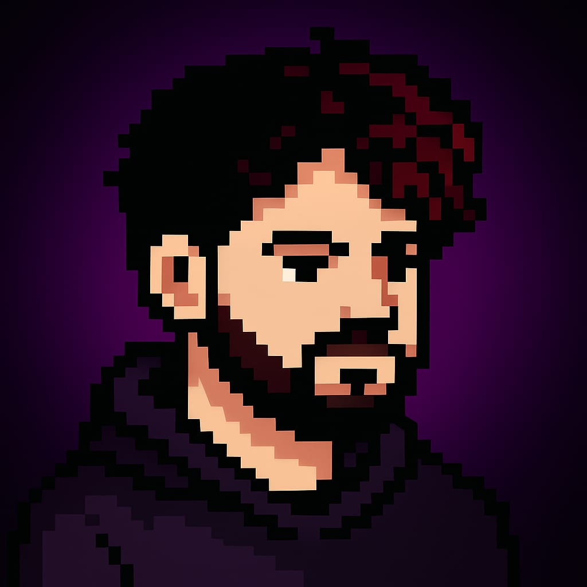

Criatividade
em Código.

Olá, seja muito bem-vindo!
Você está explorando o inventário digital de:
LEONILSON SOUZA
Atendimento ao Cliente |
Rotinas Administrativas |
Apoio Técnico |
Web Design
"Sempre fui movido pela curiosidade de entender as engrenagens do mundo. Unindo lógica e design para construir soluções digitais que realmente importam."
Explorar InventárioMeu Inventário
Ferramentas e habilidades que uso para entender, construir e explicar soluções.
Soft Skills
Criatividade & Abordagem
Ferramentas
Em Expansão
O Diferencial Didático
Minha jornada técnica começou na sala de aula. Como Professor de Informática e Web Design, aprendi que dominar as ferramentas é apenas metade do trabalho; a outra metade é saber traduzir conceitos complexos para pessoas reais, de forma simples e direta.
Aplico essa mesma visão na criação de interfaces visuais e na análise de dados (Power BI). Atuo como um facilitador entre os requisitos de negócio e a área técnica, reduzindo fricções através da comunicação clara.
Acredito profundamente que código bom não é apenas o que funciona no servidor. Trago a Didática da sala de aula para meus projetos, construindo soluções que se transformam em Experiências Acessíveis e intuitivas para o usuário final.
"O Professor Leo tem uma paciência incrível para explicar conceitos difíceis. Graças à sua didática, consegui entender a lógica por trás do código sem me sentir frustrado."
"Trabalhar com ele é ter a certeza de que os processos técnicos estarão sempre organizados e acessíveis. Ele consegue simplificar o uso de sistemas para qualquer pessoa da equipe."
"As aulas de informática eram muito visuais e fáceis de acompanhar. Ele realmente se importa em garantir que o aluno não apenas decore, mas entenda a ferramenta."
* Um novo desafio aparece!
* O que você vai fazer? [Analisar]
* O que você vai fazer? [Analisar]
Projetos em andamento
* Acompanhe meu GitHub para espiar os códigos que estou construindo no momento.
Para Meus Alunos
* Aqui guardo com carinho apostilas, slides e materiais para vocês sempre consultarem.
Entre Pixels e Silêncios
Meu futuro projeto de RPG Psicológico 2D.
Mais que uma narrativa visual, um verdadeiro laboratório de engenharia: construção de um Motor 2D do zero em Vanilla JS, operando lógica complexa de colisão, manipulação de State Machines (gerenciamento de estados) e design autoral de sprites.
[ Em Desenvolvimento ]
Bastidores do Código
Trabalhar com tecnologia é, para mim, um ato de tradução. Minha base em Administração e Atendimento me deu a resiliência necessária para lidar com prazos e conferências mercantis, enquanto meu coração de Professor me mantém focado no que realmente importa: as pessoas.
Status ao Vivo (GitHub)
Repositórios Públicos: ⏳ | Seguidores: ⏳ Dados consumidos via API com política de Cache Local Automático (Zero Rate Limit).
Repositórios Públicos: ⏳ | Seguidores: ⏳ Dados consumidos via API com política de Cache Local Automático (Zero Rate Limit).
Galeria de Projetos & Design
Uma seleção de artes, protótipos e estudos desenvolvidos durante minha jornada. Aqui aplico fundamentos de UI/UX, branding e design visual para transformar conceitos em interfaces reais e centradas nas pessoas.
Em breve, uma nova guia no site com os projetos detalhados!

Convite Digital Interativo (UI/UX)
Desafio: Modernizar o formato tradicional de convites de eventos.
Solução: Interface mobile interativa focada na experiência do usuário com CTAs claros.
Tech: Figma, Componentização, Prototipagem

Identidade Visual & Menu Digital
Desafio: Otimizar cardápios para leitura dinâmica com foco no cliente.
Solução: Layout acessível embasado em psicologia das cores e arquitetura da informação.
Tech: Photoshop, Illustrator, UI Design

Estudo: Psicologia das Cores
Desafio: Entender como as cores influenciam a experiência em aplicativos e sites.
Solução: Material editorial que traduz a teoria das cores para decisões práticas de design.
Tech: UX Research, Estudo de Comportamento

Branding: LDS Magazine
Desafio: Projetar uma identidade visual minimalista e de alto padrão.
Solução: Logotipo guiado por tipografia geométrica, peso visual e grids sólidos.
Tech: Illustrator, Teoria Modular, Branding

Design Editorial: LDS Magazine
Desafio: Estruturar uma leitura fluida para materiais textuais densos.
Solução: Direção de arte editorial pautada em respiros visuais e hierarquia clara.
Tech: InDesign, Diagramação, Layout Gráfico

Creative Coding & Pixel Art
Desafio: Trazer a nostalgia dos jogos retrô para o ambiente de portfólio web.
Solução: Assets em pixel art, onboarding amigável e UX lúdica em ambientes 2D.
Tech: Aseprite, Game Design, UX Retrô
Além do Código: Suporte & Atendimento
Suporte e Resolução de Problemas
Comunicação empática focada em resultados. Busco ouvir ativamente os usuários, compreender suas dificuldades e oferecer um suporte técnico que vai direto à raiz do problema, mantendo a satisfação e confiança.
Treinamento e Documentação
Com a experiência em sala de aula, facilito a comunicação entre as equipes técnicas e os usuários. Reduzo o retrabalho ao transformar fluxos complexos em tutoriais e manuais visuais simples e compreensíveis.
Organização e Processos Ágeis
Habilidade na utilização de esteiras de dados, softwares de gestão e dashboards de Power BI. Meu foco é organizar informações para gerar visibilidade e relatórios que ajudem a equipe a tomar decisões mais assertivas.
Radar de Mercado: Tech Trends 2030
Projeções baseadas no Fórum Econômico Mundial, estruturadas com UI Design nativo.
Em Alta (Oportunidades)
Como nos adaptamos? O aprendizado contínuo é a chave. Ao invés de temer as IAs, devemos dominá-las como extensões das nossas próprias habilidades criativas e analíticas, multiplicando assim a nossa eficiência.
IA & Machine Learning
0%
Cibersegurança & Cloud
0%
Energias Renováveis
0%
Em Declínio (Automação)
O contra-movimento: Com as tarefas repetitivas automatizadas, o verdadeiro valor de mercado volta para as conexões genuínas. Empatia, escuta ativa e inteligência emocional não são codificáveis. A máquina cuida do processo, nós cuidamos das pessoas.
Operadores de Dados/Telemarketing
0%
Caixas e Atendimento Físico
0%
Tarefas Administrativas/Papel
0%
Perguntas Frequentes
Tenho um perfil bem híbrido! Comecei com uma base forte em Design Gráfico e Web Design, e hoje dedico bastante tempo ao código. Gosto de unir meu olhar para estética com a lógica de programação (HTML, CSS, JavaScript) para construir interfaces bonitas e muito confortáveis de usar.
A sala de aula me ensinou muito sobre ter paciência e empatia. Quando um usuário traz uma dúvida, gosto de escutar com atenção e pegar aquele problema técnico que parece assustador, traduzindo ele para uma conversa tranquila, acolhedora e direta, garantindo que o cliente se sinta bem atendido.
Com certeza! Tenho uma vivência prática muito enriquecedora. Já operei e fechei caixa e conferi mercadorias em dias de alta demanda, mantendo sempre a calma. Gosto muito de usar o meu conhecimento em tecnologia (Pacote Office, sistemas, etc) para organizar a rotina administrativa, facilitar processos e ajudar a equipe a ganhar tempo.
Levo muito o planejamento das minhas aulas para o meu dia a dia. Gosto de pegar tarefas grandes ou projetos difíceis e dividi-los em passos menores e mais tranquilos de resolver. O meu foco principal é manter as coisas organizadas, manter a serenidade nos momentos de correria, e sempre me comunicar de forma clara para que ninguém fique com dúvidas.
Procuro oportunidades que celebrem o equilíbrio entre a habilidade técnica e o contato humano. Por ser muito adaptável, sinto que posso somar bastante tanto mergulhando no código (Desenvolvimento Web e Design) quanto atuando direto com as pessoas (Suporte Técnico, Atendimento e Assistência Administrativa).